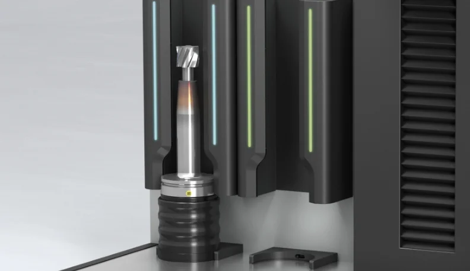
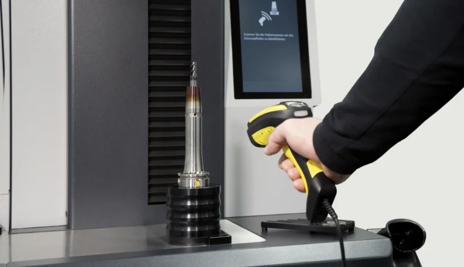
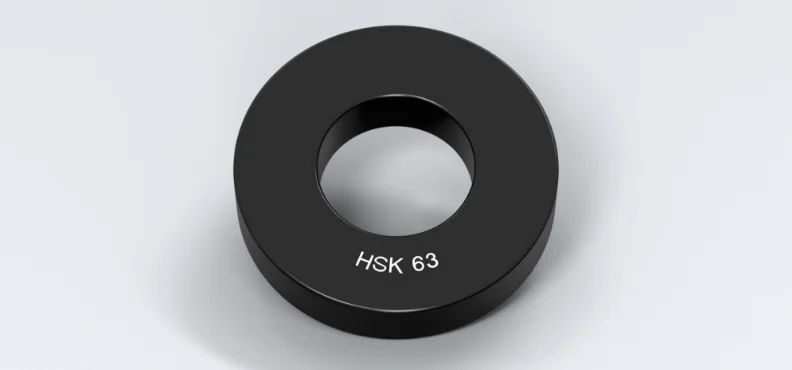
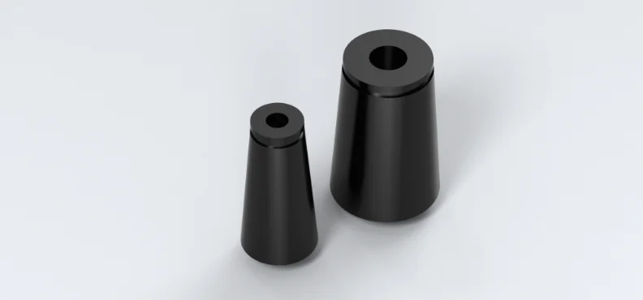

Schrumpftechnik: Ihre Vorteile
Lesen Sie, wie wir die hohen Steigerungen bei Energieeffizienz, Prozessgeschwindigkeit und Ergonomie erzielt haben. Nutzen Sie Perfektion für Ihre Fertigung.
Mehr erfahren
Treffen Sie Ihre Wahl einfach und übersichtlich oder sprechen Sie uns an: Wir beraten Sie gerne bei der Auswahl Ihres Modells und der innovativen Vielfalt an Optionen.
Die Rauchgasabsaugung entfernt Rauchgase zuverlässig aus dem Arbeitsbereich der Bedienerin und des Bedieners. Die etablierte und patentierte Rauchgasabsaugung oberhalb der Induktionsspule wurde um eine integrierte Absaugung im Inneren des Spulengehäuses erweitert. Die Rauchgase werden somit direkt dort abgesaugt, wo sie entstehen. Die Filtereinheit findet im Untertisch einen sicheren Platz.

Mit der Luftkühlung »zStream« von ZOLLER erhalten Sie maximale Flexibilität und Schutz beim Kühlen Ihrer Schrumpffutter, unabhängig von deren Kontur oder Durchmesser. Zudem werden Ihre Schrumpfwerkzeuge über die gesamte Länge gleichmäßig und sicher gekühlt – ohne die Gefahr, beschädigt zu werden. »zStream« eignet sich auch hervorragend zur Kühlung abgesetzter Werkzeuge.

Das integrierte Längeneinstellsystem dient zur Einstellung der Gesamtlänge oder Auskraglänge und zum Werkzeugtausch. Die pneumatisch aktivierte Schnellverstellung und Feinstellung per Handrad ermöglichen schnelles, ergonomisches und präzises Positionieren des Tastkopfes auf die gewünschte Höhe.

Die »pilot« Software Scan-Funktion in Kombination mit dem Hand-Scanner ermöglichen eine sichere Auswahl des passenden Schrumpfparameters per Scan der Halternummer auf der Schrumpfaufnahme. Unabhängig vom Hersteller werden alle Schrumpffutter mit DataMatrix-Code (z. B. ZOLLER »idLabel«, ZOLLER »idChip«) unterstützt.
In der »pilot« Software kann pro Schrumpffutter jeder Heizvorgang gezählt werden. Außerdem kann eine Warn- und Verschleißgrenze, in Bezug auf die zulässigen Heizvorgänge, hinterlegt werden.

Als Alternative zur Aufstellung auf einer Werkbank können »powerShrink 300« und »powerShrink 400« auf einem Aufstelltisch mit ergomisch optimaler Arbeitshöhe positioniert werden. In diesem finden Kühler und Rauchgasabsaugung einen aufgeräumten Platz. Optional ist der Aufstelltisch mit stabilen Rollen und ergonomischem Griff erhältlich, um eine variable Positionierung zu ermöglichen.

Es stehen 3 Grundkonfigurationen für die Induktionsspulen zur Auswahl:

Mit Ihrem »powerShrink« erhalten Sie standardmäßig einen Aufnahmetopf. Zum parallelen Heizen und Kühlen können wahlweise weitere hinzubestellt werden. Die Arbeitsfläche ist perfekt auf den Aufnahmetopf abgestimmt und gewährleistet ein komfortables und geräuscharmes Verschieben.

Die unterschiedlichen Aufnahmeringe ermöglichen flexibles Umrüsten zwischen verschiedenen Aufnahmeschnittstellen. Für alle gängigen Werkzeugaufnahmetypen und ‑größen bis SK 50, HSK 100 und PSC 10.

Kühladapter für spezielle Schrumpffutterformen und -größen (z. B. auch für D3 mm bis D5 mm). Passend für Kühlglocken D14 mm bis D16 mm oder D25 mm bis D32 mm.

Ablageboard für Aufnahmeringe und Sonderkühladapter
Das Ablageboard bietet Platz zur Ablage von vier Aufnahmeringen und sechs Sonderkühladaptern Größe I oder drei Sonderkühladapter Größe I und Größe II.
Werkzeugablage
Zur Ablage von Schaftwerkzeugen am Schrumpfarbeitsplatz. Die Position der Ablage kann durch die Bedienerin und den Bediener frei gewählt werden.
Ablage für Reinigungsbürsten
Zur Aufbewahrung der Reinigungsbürsten gibt es eine Ablage mit allen Bürstendurchmessern, welche über Magnete an beliebiger Position am Gerät angebracht werden kann. Auch die Bürsten zur Reinigung der Aufnahmebohrung von Schrumpffuttern sind bei ZOLLER erhältlich – für Schaftdurchmesser D3 mm bis D32 mm, wahlweise aus Messing oder Kunststoff.
Geteilte Abschirmscheiben mit Ablage
Zum Ausschrumpfen abgesetzter Werkzeuge kann optional ein Satz Abschirmscheiben (5 Stück) in geteilter Ausführung inkl. der entsprechenden Scheibenablage bestellt werden.
Für eine optimale Bedienfreundlichkeit kann der standardmäßig links angebrachte Bediengriff wahlweise rechts oder beidseitig angebracht gewählt werden. Jeder Bediengriff ist mit zwei Funktionstasten – zum Bewegen der Spule und Aktivierung des Heizvorgangs – ausgestattet.

»toolEx« unterstützt Sie beim Entfernen von Werkzeugen aus dem Schrumpffutter, die sich nicht von Hand oder mit einer Zange herausziehen lassen, wie z. B. abgebrochene Werkzeuge. Das Set beinhaltet einen Aufnahmehalter und sechs Auswerferstangen.

Mit »liteSet« stellen Sie die Auskraglänge des einzuschrumpfenden Werkzeugs ein. Die maximale Auskraglänge beträgt 150 mm. Das Set beinhaltet vier Klemmprismen für Schaftdurchmesser D3 mm bis D32 mm.

| »powerShrink 200« | »powerShrink 300« | »powerShrink 400« | »powerShrink 600« | |
| Geräte-Ausstattung | ||||
| 13,3"-TFT-Farbmonitor mit ZOLLER-Bediensoftware »pilot« | Basis | Basis | Basis | Basis |
| Stabiler Untertisch | nicht möglich | optional | optional | Basis |
| Aufstelltisch mit Rollen zur flexiblen Positionierung in der Fertigung | nicht möglich | optional | optional | nicht möglich |
| Werkbankausführung für die kompakte Installation auf eigenem Mo | Basis | Basis | Basis | nicht möglich |
| Manuelle Spulenachse mit elektromagnetischer/pneumatischer Achsklemmung | nicht möglich | Basis | Basis | Basis |
| Werkzeugachse mit manueller Achsklemmung | Basis | nicht möglich | nicht möglich | nicht möglich |
| Erhitzen | ||||
| Induktionsspule mit Abschirmscheiben | Basis | Basis | Basis | Basis |
| Induktionsspule mit Abschirmscheiben, »shrinkbyLight« | nicht möglich | nicht möglich | optional | optional |
| Induktionsspule mit Abschirmsystem »varOct«, manuell | nicht möglich | optional | optional | optional |
| Induktionsspule mit Abschirmsystem »varOct«, manuell, »shrinkbyLight« | nicht möglich | nicht möglich | optional | optional |
| Induktionsspule mit Abschirmsystem »varOct«, CNC,»shrinkbyLight« | nicht möglich | nicht möglich | optional | optional |
| Schnellwechselschnittstelle | nicht möglich | nicht möglich | nicht möglich | optional |
| 14-kVA-Induktionsspule | Basis | Basis | Basis | Basis |
| 22-kVA-Induktionsspule | nicht möglich | nicht möglich | nicht möglich | optional |
| Rauchgasabsaugung | optional | optional | optional | optional |
| Spulen-Bediengriff links | nicht möglich | Basis | Basis | Basis |
| Spulen-Bediengriff rechts oder beidseitig | nicht möglich | optional | optional | optional |
| Kühlen | ||||
| Kein Kühlsystem | Basis | nicht möglich | nicht möglich | nicht möglich |
| Luftkühlung unterhalb der Induktionsspule | optional | nicht möglich | nicht möglich | nicht möglich |
| Kühlglocken Standard, 3-fach | nicht möglich | Basis | nicht möglich | nicht möglich |
| Kühlglocken Standard, 5-fach | nicht möglich | nicht möglich | Basis | Basis |
| Kühlglocken mit »coolbyLight« inkl. Kühlzeitüberwachung, 5-fach | nicht möglich | nicht möglich | optional | optional |
| Freie Kühlglockenführung mit Fixiermechanismus | nicht möglich | Basis | Basis | Basis |
| Lineare, mechanische Kühlglockenführung mit Push-to-Release-Mechanismus | nicht möglich | nicht möglich | nicht möglich | optional |
| Luftkühlung »zStream« mit zwei Kühlplätzen | nicht möglich | nicht möglich | optional | nicht möglich |
| Kühl-Manager | nicht möglich | nicht möglich | Basis | Basis |
| Software | ||||
| ZOLLER-Bediensoftware »pilot« | Basis | Basis | Basis | Basis |
| Selbsterklärende, grafische Funktionsflächen | Basis | Basis | Basis | Basis |
| Farblich animierte Zustandsanzeigen | Basis | Basis | Basis | Basis |
| Schnittstelle zu »actbyLight« | nicht möglich | nicht möglich | optional | Basis |
| Scan-Funktion | optional | optional | optional | optional |
| Zählfunktion der Schrumpfvorgänge | optional | optional | optional | optional |
| Hardware-Optionen & Zubehör | ||||
| Längeneinstellung »eQset« | nicht möglich | nicht möglich | optional | optional |
| Hand-Scanner | optional | optional | optional | optional |
| Aufnahmetopf | nicht möglich | optional | optional | optional |
| Aufnahmeringe SK, HSK, Polygonschaftkegel, weitere auf Anfrage | optional | optional | optional | optional |
| Sonderkühladapter | nicht möglich | optional | optional | optional |
| Ablagebord für Aufnahmeringe | Basis | optional | optional | optional |
| Werkzeugablage | Basis | optional | optional | optional |
| Ablage für Reinigungsbürsten | optional | optional | optional | optional |
| Geteilte Abschirmscheiben mit Scheibenablage | optional | optional | optional | optional |
| Ausschrumpfvorrichtung »toolEx« | optional | optional | optional | optional |
| Lägeneinstellung »liteSet« | optional | optional | optional | optional |
Lesen Sie, wie wir die hohen Steigerungen bei Energieeffizienz, Prozessgeschwindigkeit und Ergonomie erzielt haben. Nutzen Sie Perfektion für Ihre Fertigung.

Der individuelle Austausch über Ihre Ziele und unsere Ideen dafür. Die Online-Beratung von ZOLLER direkt aus der Smart Factory. Vereinbaren Sie jetzt Ihren Termin.